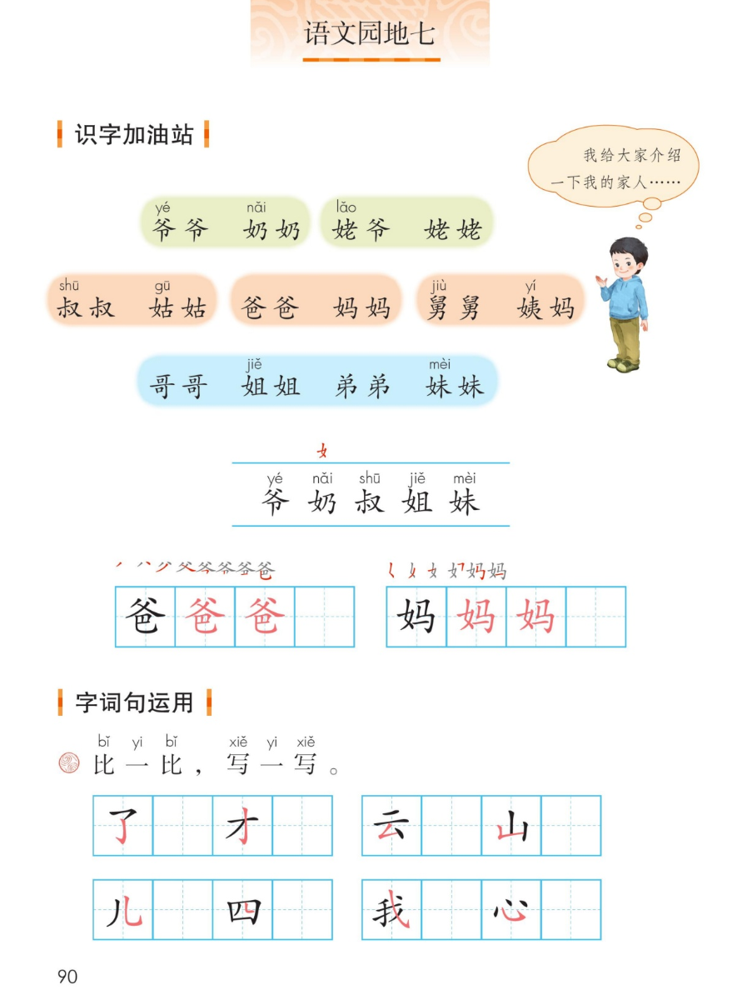
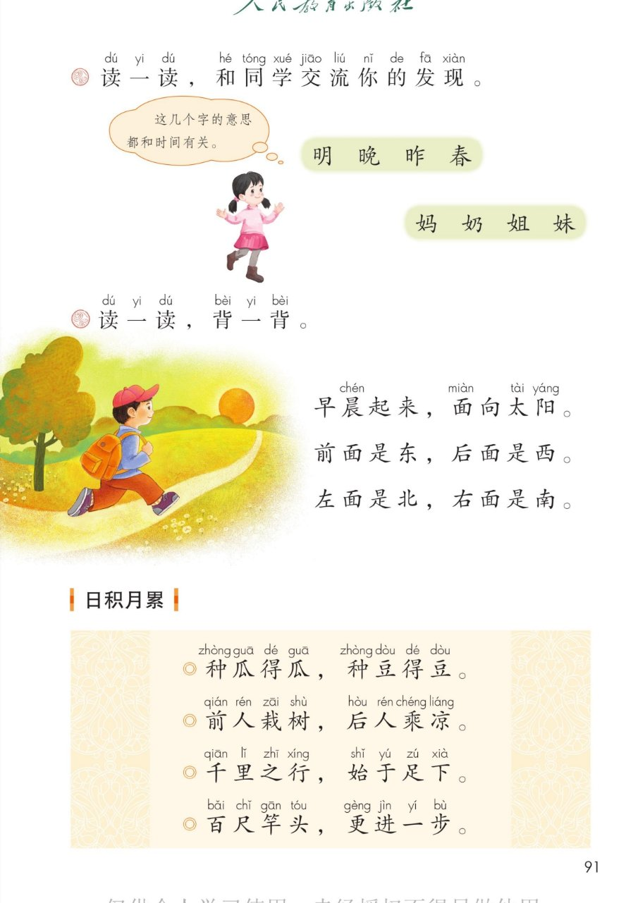
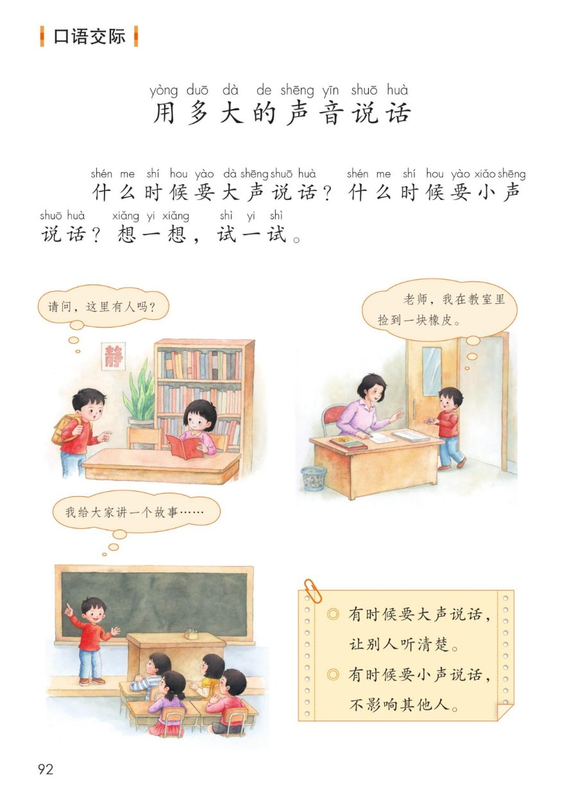
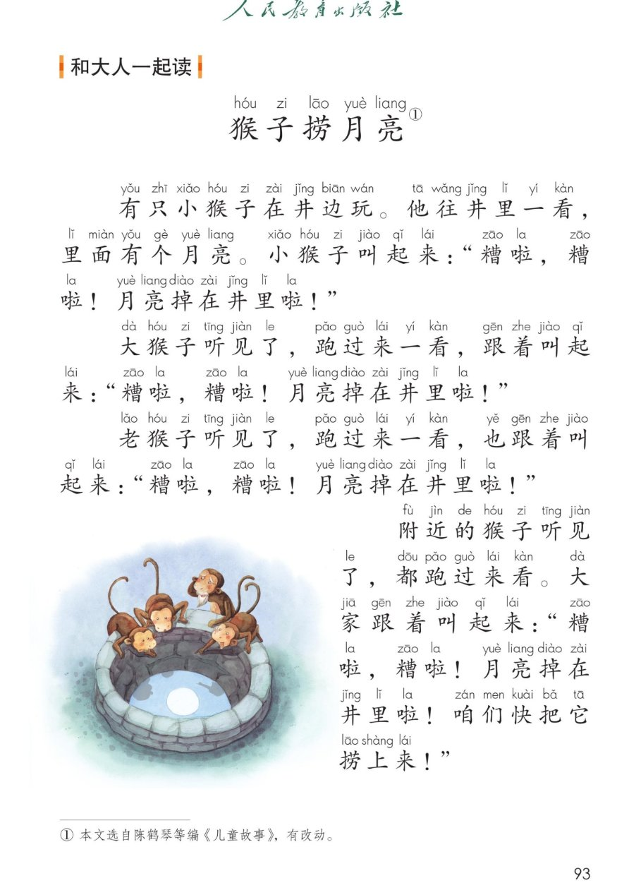
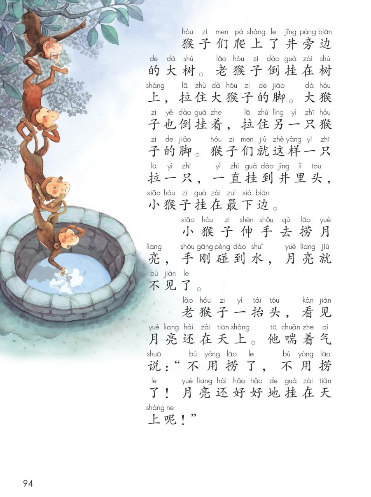

×
🔊 手机听不到声音怎么办？
① 先把手机
媒体音量调大 ，确认没开静音、没连蓝牙耳机；在微信里打开的，点右上角「⋯ → 用浏览器打开」。
② 还是没声音？到应用商店免费下载
Microsoft Edge 浏览器 （它自带朗读发声），用它打开本页面就能出声。
③ 换了 Edge 仍然没声音，说明这部手机的
硬件/系统不支持 网页朗读（多为老旧机型）；近几年买的新手机一般都能正常播放。
→ 打开声音自检
统编版 · 一年级上册 · 第七单元 · 语文园地七
语文园地七
介绍我的家人、比一比写一写、发现偏旁的秘密、背方向歌、4 句谚语、用多大的声音说话、猴子捞月亮。
家人称呼 14 个 会认 5 字 会写 2 字 日积月累 4 句 口语交际 和大人一起读 闯关 8 题
这个园地学什么： 用 14 个家人称呼 介绍自己的家人，认 5 个字、写好「爸、妈」；
比一比 4 组形近字 ；发现日字旁和女字旁 的秘密；背方向歌 、记 4 句谚语 ；
学会什么时候大声、什么时候小声 ；再和大人一起读《猴子捞月亮》。🐒
页面上的拼音照课本标注，只供看，不进朗读；家人关系说明、句意解释是帮你说给大家听的，课本只印称呼和原句。
课本第 90 页 点一个称呼读一个
课本气泡： 「我给大家介绍一下我的家人…… 」——
下面的称呼按课本分成绿、橙、蓝 三行，点一个读一个。👨👩👧
🍊 第二行（课本橙色）· 叔叔姑姑、爸爸妈妈、舅舅姨妈
🔎 看一看： 课本只给爷、奶、姥、叔、姑、舅、姨、姐、妹 注了音；
爸爸、妈妈、哥哥、弟弟 没注音——这些字我们已经认识啦。
女
课本生字条上方的「女」字 ：五个要认的字里，
奶、姐、妹 都带女字旁 ，都是家里女性的称呼；爷、叔 不带女字旁。
识字条 · 连起来读
爷 奶 叔 姐 妹 —— 五个字里，奶 姐 妹 都有女字旁
课本第 90 页田字格 点卡听笔顺
✍️ 课本上的红字笔顺： 爸 ＝父＋巴（上下结构），妈 ＝女＋马（左右结构，左窄右宽）。
田字格里「黑字示范 → 红字描红 → 空格自己写」。笔顺提示供参考，以课本和老师为准。
课本第 90 页 点一组读一组
课本原题： 比一比，写一写。了—才、云—山、儿—四、我—心 。先看清楚差别，再动笔。🔍
💡 比一比的好办法： ① 先数笔画；② 找最关键的一笔 在哪儿；③ 看它住在田字格的哪一格。
写之前用小手指在桌上空写一遍，再落到本子上。
课本第 91 页 点一个字读一个字
课本原题： 读一读，和同学交流你的发现。课本气泡： 「这几个字的意思都和时间有关。 」—— 说的是第一行。💬
☀️ 第一组 · 明 晚 昨 春（点字听读）
我的发现： 这四个字里都藏着「日 」：明＝日＋月，晚、昨是日字旁，
春的下面也是日。它们都和时间有关 ——明天、晚上、昨天、春天。
🌸 第二组 · 妈 奶 姐 妹（点字听读，自己先想一想）
我的发现： 四个字都是女字旁 ，都是家里女性的称呼。
和第 90 页生字条上方的「女」字对上了！看偏旁猜意思 ，是识字的好办法。
🗣️ 和同学这样说： 「我发现 ……，因为 ……」
先说发现，再说理由；听的同学可以补充，也可以问一个问题。
课本第 91 页 点一行读一行
课本原题： 读一读，背一背。晨、面、太阳 注了音，其余的字我们都认识。
🎵 四句连读
🐢 放慢背一背（每句读两遍）
🧭 背之前先站一站： 早晨面向太阳 站好，前东、后西、左北、右南。
明天早上到操场真的试一次，四句话就记住啦！🌅
课本第 91 页 点一句读一句
📖 日积月累： 四句短短的谚语 ，一句一个道理。
先读准 → 再听意思 → 最后背下来。课本给每个字都注了音。
🎵 四句连读
🐢 放慢背一背（每句读两遍）
🎯 背诵小窍门： 每句都是前半 + 后半 ——先记住前半（种瓜得瓜），
再接后半（种豆得豆）。一句一句接上去，四句就串成串啦。
课本第 92 页 点一张读一张
课本原题： 什么时候要大声 说话？什么时候要小声 说话？想一想，试一试。
📌 课本右下角的话（照录）： 有时候要大声说话，让别人听清楚。 有时候要小声说话，不影响其他人。
自己先说，再点卡听参考
🗣️ 说话小提醒： 先看旁边有没有人在安静做事 ，再看听的人离你多远 ；
说话时看着对方的眼睛，把话说完整。音量选对了，就是有礼貌的孩子。⭐
课本第 93~94 页 点一段读一段
👨👩👧 和大人一起读： 故事跨两页——
第 93 页发现井里的月亮 ，第 94 页倒挂成一串去捞 。
建议：大人读一段，你读一段，再换过来读一遍。🐒
🎵 全文连读
🔁 跟读模式（读完一段停一停）
🧩 按顺序讲一遍（5 张卡片）
点一张读一张，连起来就是故事
读后想一想： 井里为什么会有月亮？月亮真的掉进去了吗？🌕月亮在水里的倒影 ；手一碰水，水面起了波纹，影子就散了。
抬头一看，月亮还好好地挂在天上呢！
小道理：遇到事情别急着下结论，先看一看、想一想 。
点题目可以听题，点选项就判对错，答完自动算分
已经答 0 题，答对 0 题。
点图放大

第 90 页 · 识字加油站 · 字词句运用

第 91 页 · 我的发现 · 读一读背一背 · 日积月累

第 92 页 · 口语交际 · 用多大的声音说话

第 93 页 · 和大人一起读 · 猴子捞月亮（上）

第 94 页 · 猴子捞月亮（下） · 老猴子抬头看天